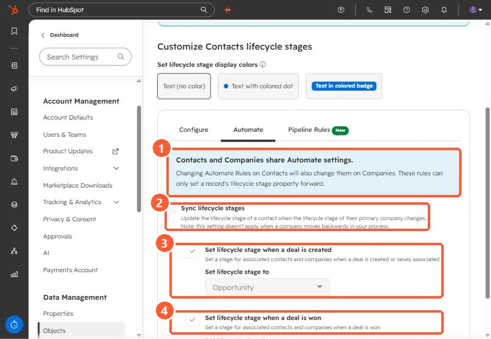

Short answer
On the lifecycle stage Automate tab there are three rules. Set lifecycle stage when a deal is created (Opportunity in my demo) and Set lifecycle stage when a deal is won (Customer) update associated contacts and companies. Sync lifecycle stages updates a contact when its primary company's stage changes, and is unticked in my demo. The page says these rules only move a stage forward, and contacts and companies share them.
1. The three rules
Open lifecycle stage automation.


- Shared and forward only. Changing these on contacts changes them on companies, and they only set a stage forward.
- Sync lifecycle stages. Updates a contact when its primary company's stage changes. The note says it does not apply when a company moves backwards.
- Deal created. Sets associated contacts and companies to the chosen stage when a deal is created or newly associated. Opportunity here.
- Deal won. Sets them to the chosen stage when a deal is won. Customer here.
2. What HubSpot says about edge cases
- A contact already at Customer does not drop to Opportunity when a new deal is created. A contact at Lead does move to Opportunity.
- The deal created rule applies when the first associated deal is created.
- With the deal won rule off, HubSpot says the Close date and Days to close properties on associated contacts and companies are not updated automatically.
If SQL counts look wrong because contacts jump straight to Opportunity, see why the SQL count is zero.